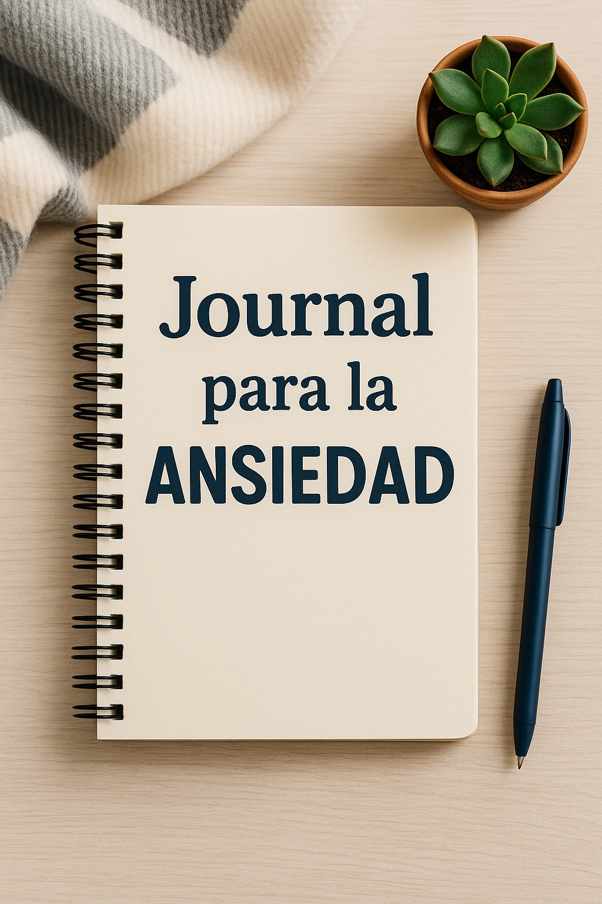

Journal para la ansiedad: empieza hoy y calma tu mente
Introducción: ¿Qué es un journal para la ansiedad?
Un journal para la ansiedad es mucho más que un diario de apuntes. Es un espacio personal para soltar pensamientos, organizar emociones y liberar la mente. Es una forma sencilla y efectiva de autoterapia diaria.
Beneficios de escribir un journal para la ansiedad
Escribir alivia la presión mental, reduce pensamientos repetitivos y mejora tu enfoque. Es el complemento ideal para tu Mindfulness Diario, tu Guía de Técnicas de Respiración o una Meditación Guiada.
Cómo empezar tu propio journal para la ansiedad
1️⃣ Elige tu libreta o formato digital
Escoge una libreta que te inspire o usa una app sencilla. Lo importante es que puedas escribir sin distracciones.
2️⃣ Crea un espacio de escritura calmado
Tu rincón de paz en casa es ideal para sentarte, encender una vela y dedicarte 5 minutos de escritura consciente.
3️⃣ Establece un momento fijo cada día
Antes de dormir o al iniciar el día, escribir unos minutos despeja la mente y te ayuda a procesar emociones.
4️⃣ Escribe sin filtros: libera tus pensamientos
No pienses en la ortografía ni en el orden. Escribe tal cual lo sientes. Deja que el papel sostenga tus preocupaciones.
Páginas clave que puedes incluir en tu journal para la ansiedad
Página de gratitud diaria
Apunta 3 cosas por las que agradeces cada día. Es una forma de entrenar la mente para enfocarse en lo positivo.
Registro de pensamientos recurrentes
Identifica lo que se repite en tu mente. Al ponerlo en palabras, lo ves desde otra perspectiva.
Hoja de respiración o ejercicios calmantes
Reserva espacio para anotar cómo aplicas tu Guía de Respiración o tu Rutina de 5 Minutos para Reducir Ansiedad.
Plan de auto-cuidado semanal
Anota actividades que nutran tu cuerpo y tu mente: una ducha larga, un paseo, un rato sin móvil.
Errores comunes al usar un journal para la ansiedad
- Creer que debes escribir mucho cada día.
- Sentir culpa si lo dejas una semana.
- Usarlo solo cuando tienes ansiedad, en lugar de hacerlo un hábito.
Cómo complementar tu journal con otras prácticas
Combina tu journal con técnicas de respiración, yoga suave o meditación. Prueba también Cómo dejar de sobrepensar antes de dormir para calmar tu mente en la noche.
Preguntas frecuentes sobre journals y ansiedad
¿Digital o papel? Lo que más se ajuste a ti.
¿Cuánto tiempo dedicarle? 5-10 minutos es suficiente.
¿Qué hago si no sé qué escribir? Empieza con una lista: “Hoy me preocupa…”.
Conclusión: Empieza hoy y nota la diferencia
Un journal para la ansiedad es tu herramienta personal para soltar tensiones, ordenar pensamientos y reconectar contigo. Solo necesitas papel, boli y constancia.